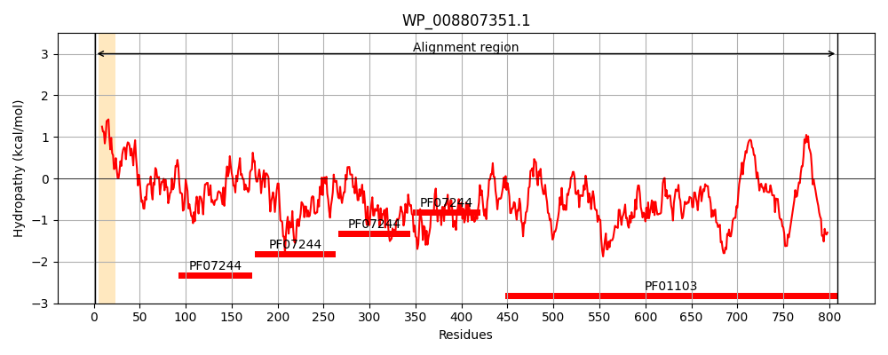
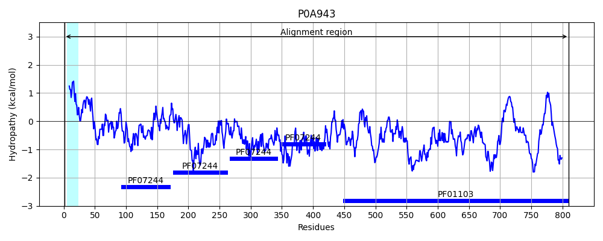
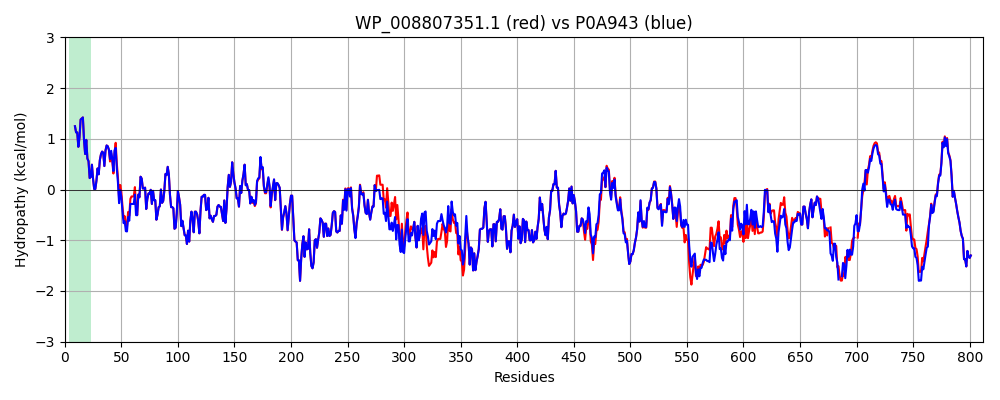

Hit Accession: P0A943
Hit TCID: 1.B.33.1.3
Hit Description: gnl|BL_ORD_ID|8629 gnl|TC-DB|P0A943|1.B.33.1.3 Protein yaeT precursor - Shigella flexneri.
Mach Len: 812
e:0.000000
Query TMS Count : 1
Hit TMS Count: 1
TMS-Overlap Score: 1.000000
Predicted Substrates:CHEBI:8526;protein polypeptide chain
BLAST Alignment:
Score: 3916 , Bit scores: 1513 bits, E-value: 0.0e+00, Alignment length: 812, Percentage identity: 91
Query: 1 MAMKKLLIASLLFSSATVYGAEGFVVKDIHFEGLQRVAVGAALLSMPVRPGDTVTDDDISNTIRALFATGNFEDVRVLRDGDTLLVQVKERPTIASITFSGNKSVKDDMLKQNLEASGVRVGESLDRTTIADIEKGLEDFYYSVGKYSASVKAVVTPLPRNRVDLKLVFQEGVSAKIQQINIVGNHAFSTDELISHFQLRDEVPWWNVVGDRKYQKQKLAGDLETLRSYYLDRGYARFNIDSTQVSLTPDKKGIYITVNITEGDQYKLSGVQVTGDLAGHSAEIEALTKVEPGELYNGAKVTKMENDIKKLLGRYGYAYPRVQSQPEINDSDKTVKLHVNVDAGNRYYVRKIRFEGNDTSKDAVLRREMRQMEGAWLGSDLVDQGKDRLNRLGFFETVDTDTQRVPGSPDQVDVVYKVKERNTGSFNFGIGYGTESGVSFQAGVQQDNWLGTGYAVGINGTKNDYQTYTELSVTNPYFTVDGVSLGGRIFYNDFDANDADLSDYTNKSYGTDVTLGFPVNEYNTLRAGVGYVHNSLSNMQPQVAMWRYLNSMGQYPDNTNDRNSFSANDFTFNYGWTYNKLDRGFFPTEGSRVNLNGKVTIPGSDNEYYKATLDTATYVPIDNDHQWVVLGRTRFGYGDGIGGKEMPFYENFYAGGSSTVRGFQSNTIGPKAVYFP-SSSRHDGDSGYTNDCKSTESAP--CKSDDAVGGNAMAVASLELITPTPFISDKYANSVRTSVFWDMGTVWDTHWDSNAYGGYPDYSDPSNIRMSAGIAVQWMSPLGPLVFSYAQPFKKYDGDKAEQFQFNIGKTW 809
MAMKKLLIASLLFSSATVYGAEGFVVKDIHFEGLQRVAVGAALLSMPVR GDTV D+DISNTIRALFATGNFEDVRVLRDGDTLLVQVKERPTIASITFSGNKSVKDDMLKQNLEASGVRVGESLDRTTIADIEKGLEDFYYSVGKYSASVKAVVTPLPRNRVDLKLVFQEGVSA+IQQINIVGNHAF+TDELISHFQLRDEVPWWNVVGDRKYQKQKLAGDLETLRSYYLDRGYARFNIDSTQVSLTPDKKGIY+TVNITEGDQYKLSGV+V+G+LAGHSAEIE LTK+EPGELYNG KVTKME+DIKKLLGRYGYAYPRVQS PEIND+DKTVKL VNVDAGNR+YVRKIRFEGNDTSKDAVLRREMRQMEGAWLGSDLVDQGK+RLNRLGFFETVDTDTQRVPGSPDQVDVVYKVKERNTGSFNFGIGYGTESGVSFQAGVQQDNWLGTGYAVGINGTKNDYQTY ELSVTNPYFTVDGVSLGGR+FYNDF A+DADLSDYTNKSYGTDVTLGFP+NEYN+LRAG+GYVHNSLSNMQPQVAMWRYL SMG++P ++ NSF +DFTFNYGWTYNKLDRG+FPT+GSRVNL GKVTIPGSDNEYYK TLDTATYVPID+DH+WVVLGRTR+GYGDG+GGKEMPFYENFYAGGSSTVRGFQSNTIGPKAVYFP +S +D D Y +C + + A CKSDDAVGGNAMAVASLE ITPTPFISDKYANSVRTS FWDMGTVWDT+WDS+ Y GYPDYSDPSNIRMSAGIA+QWMSPLGPLVFSYAQPFKKYDGDKAEQFQFNIGKTW
Sbjct: 1 MAMKKLLIASLLFSSATVYGAEGFVVKDIHFEGLQRVAVGAALLSMPVRTGDTVNDEDISNTIRALFATGNFEDVRVLRDGDTLLVQVKERPTIASITFSGNKSVKDDMLKQNLEASGVRVGESLDRTTIADIEKGLEDFYYSVGKYSASVKAVVTPLPRNRVDLKLVFQEGVSAEIQQINIVGNHAFTTDELISHFQLRDEVPWWNVVGDRKYQKQKLAGDLETLRSYYLDRGYARFNIDSTQVSLTPDKKGIYVTVNITEGDQYKLSGVEVSGNLAGHSAEIEQLTKIEPGELYNGTKVTKMEDDIKKLLGRYGYAYPRVQSMPEINDADKTVKLRVNVDAGNRFYVRKIRFEGNDTSKDAVLRREMRQMEGAWLGSDLVDQGKERLNRLGFFETVDTDTQRVPGSPDQVDVVYKVKERNTGSFNFGIGYGTESGVSFQAGVQQDNWLGTGYAVGINGTKNDYQTYAELSVTNPYFTVDGVSLGGRLFYNDFQADDADLSDYTNKSYGTDVTLGFPINEYNSLRAGLGYVHNSLSNMQPQVAMWRYLYSMGEHPSTSDQDNSFKTDDFTFNYGWTYNKLDRGYFPTDGSRVNLTGKVTIPGSDNEYYKVTLDTATYVPIDDDHKWVVLGRTRWGYGDGLGGKEMPFYENFYAGGSSTVRGFQSNTIGPKAVYFPHQASNYDPD--YDYECATQDGAKDLCKSDDAVGGNAMAVASLEFITPTPFISDKYANSVRTSFFWDMGTVWDTNWDSSQYSGYPDYSDPSNIRMSAGIALQWMSPLGPLVFSYAQPFKKYDGDKAEQFQFNIGKTW 810 | Protein Hydropathy Plots: |
|---|
|  |  |
Pairwise Alignment-Hydropathy Plot:
|
|---|
|  |